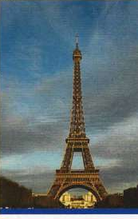

32
Money
A
People’s financial circumstances
Alex:
If this business idea is as successful as we think it'll be, we'll be quids in for a change.
[make a profit; quid is a colloquial word for a pound sterling (informal)]
Sam:
Yes, we'll be laughing all the way to the bank.
[making a lot of money easily]
Alex:
And it will be so easy too – it really will be money for old rope.
[money that is easily earned (informal)]
Lee:
I'd love to get a job with a decent salary. I'm tired of living on a shoestring.
[living on very little money]
Kumiko:
Me too. It would be great to be rolling in it, wouldn't it?
[have lots of money (informal)]
Paula:
Since my husband lost his job, I'm the breadwinner in my family.
[person who earns the money the family needs]
Maria:
Really? Well, I guess I bring home the bacon in my family too.
[earn the money the family lives on (informal)]
Kallum:
Could you lend me 20 pounds?
Phil:
Sorry, mate, I'm a bit strapped for cash at the moment.
[don't have enough money]
Dave:
That singer's ex-wife – you know the one I mean – she took him to the cleaner's when they got divorced. He's ruined!
[got as much money from him as she could]
Beth:
I know. She's so greedy, isn't she? She would sell her own grandmother / mother.
[would do anything to get money (informal)]
Laura:
I can't believe you've bought a new car! We can't afford to throw money down the drain.
[waste money]
Tim:
It's OK. It was going for a song – I only paid a few hundred pounds.
[being sold very cheaply]
B
How people use money
Enter our rags to riches1 competition!
Are you tired of scrimping and saving2 in order to make ends meet3?
Fed up with paying over the odds4 for things and penny-pinching5 all the time?
Are you always on the lookout for cheap and cheerful6 things that won't break the bank7?
Would you like to feel you had money to burn8?
Then enter our competition for a chance to win £10,000 and a no-expense-spared9 weekend in Paris.
All you have to do is ...

1 from poverty to wealth
2 living very economically
3 have just enough money to pay for the things you need
4 paying more than something is worth
5 spending as little money as possible
6 cheap but good or enjoyable
7 don't cost a lot
8 excess money
9 luxury; a lot of money is spent to make it good